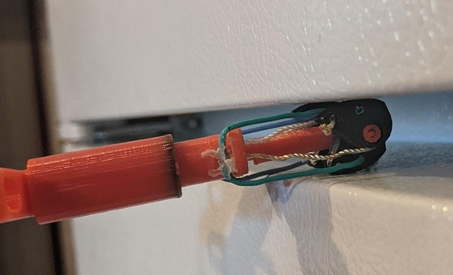
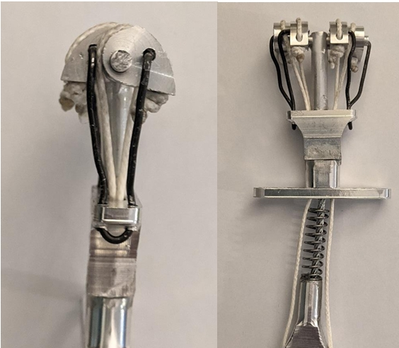
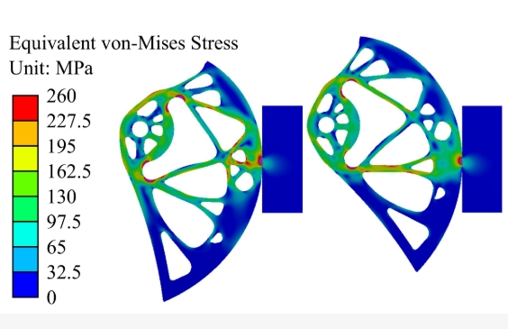

Designing Better Micro Cams
Preliminary prototypes for micro cam design, 3D printed initially in PLA plastic then in machined aluminum for main construction.
Interactive Simulation
Explore how camming angle, applied load, friction coefficient, and lobe geometry affect the forces generated by the cam.
Open interactive cam simulator →

